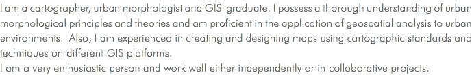
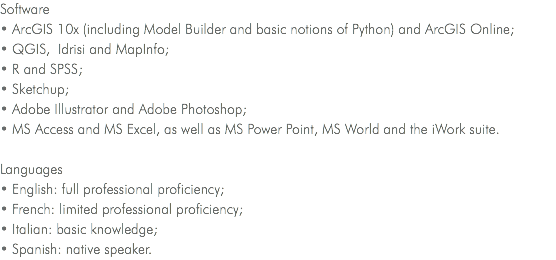
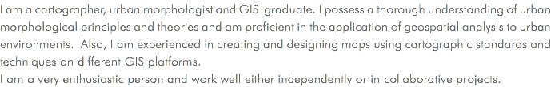
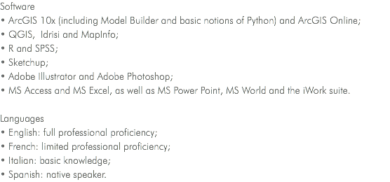
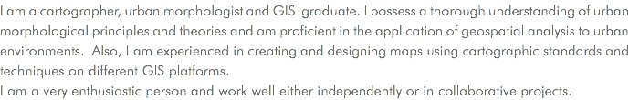
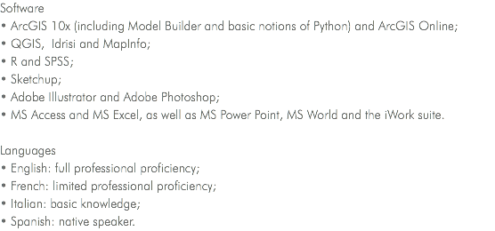

 



![Concordia University, Montréal, Québec (2012 - 2015)
Teaching Assistant of Geographic Information Systems (introduction and advanced) and Analytical Methods in Urban Studies.
• Supported to professors during laboratory demonstrations;
• Supervised practical work, gave advising on methods and techniques;
• Graded exams, essays and student’s reports. Concordia University, Montréal, Québec (2013 - 2015)
Technical and Administrative Support - Department of Geography
• Responded, tracked and followed up end users requests through ticket system.
• Performed software installation and maintenance of computer equipment;
• Acted as front desk receptionist;
• Carried out file management and data entry tasks. Jones Lang LaSalle, Inc., Montréal, Québec (June 2011 – December 2011)
Research Analyst (intern)
• Researched, gathered, and treated geospatial and statistical data;
• Produced thematic maps according to specific demographics;
• Acquired experienced in using ArcGIS 10 and Adobe Illustrator CS5, as well as in managing • cadastral files. OCASA, Córdoba, Argentina (2006 - 2008)
Team Leader
• Managed a twelve-people team;
• Coordinated activities at regional and national level among branches and clients;
• Responsible for QA and observation of deadlines;
• Performed training for new employees.](images/u338-49.png)